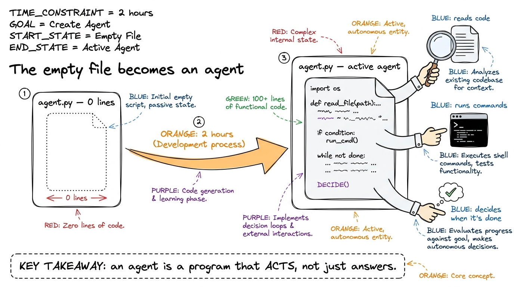
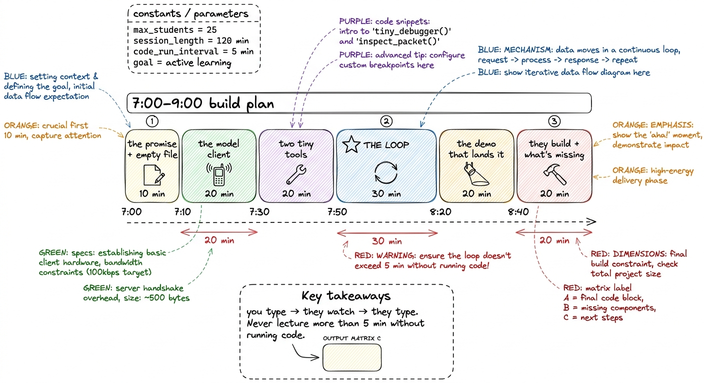
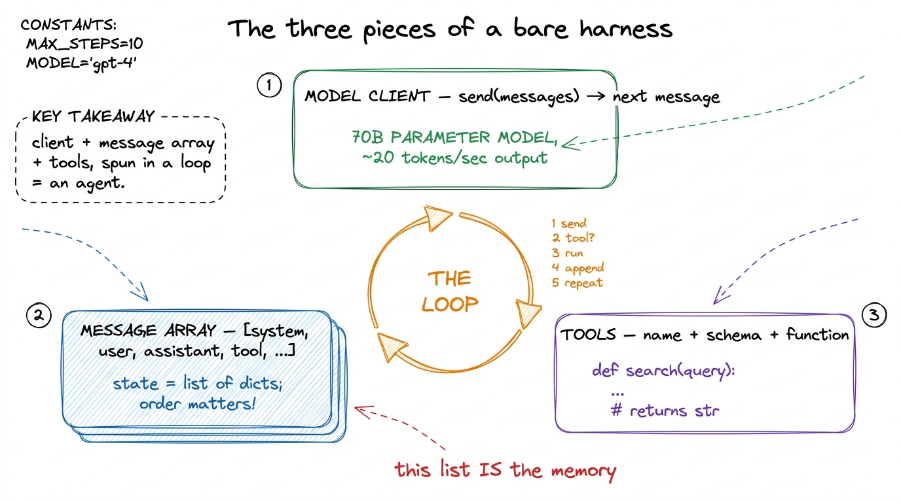
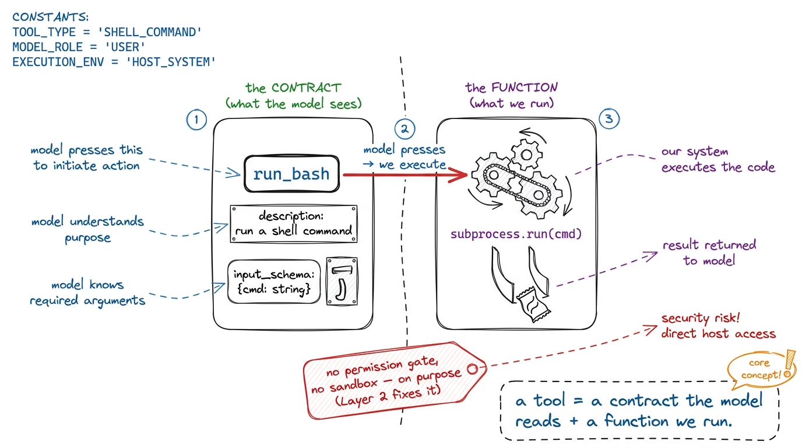
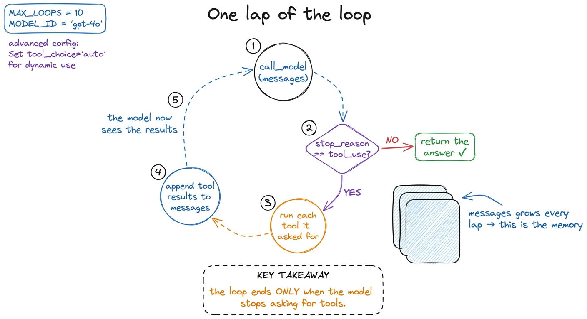
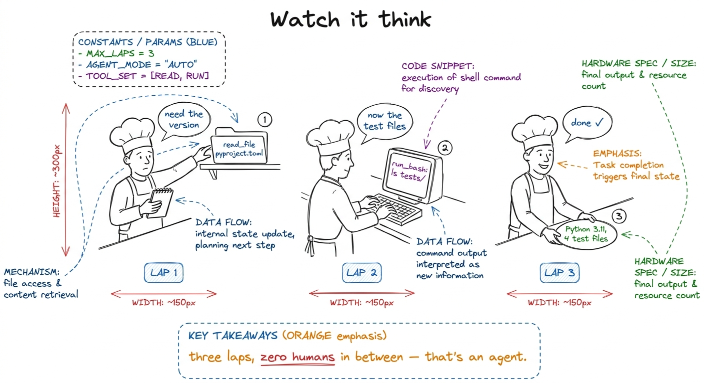
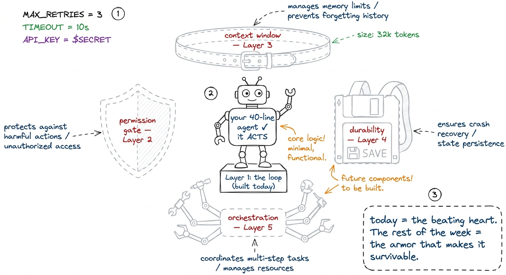

Teaching the first bare harness (live build)
By the end of this chapter you can stand at the front of the room and build a real coding agent live, from an empty file, in under two hours — a model client, a message array, and a loop — and have the whole cohort watching a program plan, act on a real machine, and decide again on its own. This is the morning where the workshop stops being slides and becomes an agent. You must own the build so completely that you can type it while talking, recover from a typo without panic, and know exactly which line makes the room gasp.
This chapter is a lecture plan, not a concept explainer. The concepts (the loop, the client, the message array) were taught the day before. Today you perform the build. So most of what follows is choreography: what to type, when to pause, what to let them try, and the one demo that lands the whole idea.
The one promise you make at 7:00 AM
Open by making a promise, out loud, and writing it on the board: "In the next two hours, from an empty file, we will build a program that reads your code, runs commands on your machine, and finishes a job you give it — with no human in the loop. About forty lines. No framework." Then say the honest part: "Everything after today is making this forty-line thing safe, durable, and scalable. But the beating heart is what we build this morning."

figure rendering · The morning's promise, drawn: an empty file grows hands and becomes soThe shape of the two hours
Here is your timing spine for the 7:00–9:00 AM session. Keep it on a sticky note beside your keyboard. The rule of the morning is: you type, they watch, then they type. Never explain a piece for more than a few minutes before it becomes running code.

figure rendering · The two-hour ribbon: six blocks, with the loop as the starred centerpi- 7:00–7:10 — The promise + the empty file. Set the stakes. Draw the three-piece diagram. Open one editor, one terminal, side by side, both projected big.
- 7:10–7:30 — The model client. One function. Prove it talks.
- 7:30–7:50 — Two tiny tools. A schema half and a function half.
- 7:50–8:20 — The loop. The heart. Slowest, most careful block.
- 8:20–8:40 — The demo that lands it. A multi-lap task, live, with
prints showing every step. - 8:40–9:00 — They build + the honest gaps. Cohort types their own; you show what it's dangerously missing.
Block 1 (7:00–7:10) — Draw the three pieces before you type a thing
Before a single line of code, draw the map. If they hold this triangle in their heads, every line you type lands in a slot they already have.
A bare harness is exactly three things. A model client — one function that sends the conversation and gets back the model's next message. A message array — the running list of everything said so far, which literally is the agent's memory. And a loop that ties them together with a set of tools the model is allowed to call.

figure rendering · Draw this first, before any code: the three pieces and the loop that sBlock 2 (7:10–7:30) — The model client: prove it talks
Now the first code. Keep it brutally small. The whole "AI" of the agent is one function; everything else you write today is the harness around it.
import anthropic
client = anthropic.Anthropic() # reads ANTHROPIC_API_KEY from the environment
def call_model(messages, tools):
return client.messages.create(
model="claude-sonnet-4-6",
max_tokens=4096,
system="You are a coding agent. Use tools to finish the job.",
messages=messages,
tools=tools,
)Type it live. Then — before anything else — prove it talks. This is the first dopamine hit of the morning and you must not skip it.
print(call_model([{"role":"user","content":"say hi in three words"}], [])). Run it in the terminal. When the reply object prints, point at the .content and say: "there — the model answered. That's the entire brain. Now we build the body around it." Then delete the throwaway line. The cohort has seen the API respond in ninety seconds; the mystery is gone.messages and tools are inputs we control. The model only ever sees what our harness decides to hand it. That means the harness — not the model — is in charge of what the agent knows. Hold that thought; it's the seed of everything we build in the next four days." Say this while pointing at the two arguments.Block 3 (7:30–7:50) — Two tiny tools: a contract and a function
A tool has two halves, and you teach them as two halves, side by side. The half the model sees is a contract: a name, a description, and a JSON schema of the arguments — that's how the model knows the tool exists and how to call it. The half we run is an ordinary function.
import subprocess, pathlib
TOOLS = [
{"name": "read_file",
"description": "Read a text file and return its contents.",
"input_schema": {"type": "object",
"properties": {"path": {"type": "string"}}, "required": ["path"]}},
{"name": "run_bash",
"description": "Run a shell command, return stdout+stderr.",
"input_schema": {"type": "object",
"properties": {"cmd": {"type": "string"}}, "required": ["cmd"]}},
]
def run_tool(name, args):
if name == "read_file":
return pathlib.Path(args["path"]).read_text()
if name == "run_bash":
r = subprocess.run(args["cmd"], shell=True, capture_output=True, text=True)
return (r.stdout + r.stderr)[:4000]
return f"unknown tool: {name}"
figure rendering · A tool has two halves: the vending-machine label the model reads, anddescription and the schema — nothing else. The model never sees your Python function. It only reads the label. That's why a vague description is a broken tool." Plant this now; tomorrow's whole chapter is tool schemas as contracts.Say plainly what you are leaving out: there is no permission gate before run_bash and no sandbox. You are omitting them on purpose so the loop is naked and obvious — and so that when the agent runs a command they didn't expect, they feel why Layer 2 exists.
Block 4 (7:50–8:20) — The loop: the heart, taught line by line
This is the block that matters. Slow down. It is fifteen lines and it is the whole of agency. Type it one line at a time, narrating each.
def run_agent(user_request):
messages = [{"role": "user", "content": user_request}]
while True:
reply = call_model(messages, TOOLS) # 1. ask the model
messages.append({"role": "assistant", "content": reply.content})
if reply.stop_reason != "tool_use": # 2. no tool? done
return text_of(reply)
tool_results = []
for block in reply.content: # 3. run each tool asked for
if block.type == "tool_use":
out = run_tool(block.name, block.input)
tool_results.append({"type": "tool_result",
"tool_use_id": block.id, "content": str(out)})
messages.append({"role": "user", "content": tool_results}) # 4. feed results back
# 5. loop: the model now sees the results and decides the next moveTrace one lap out loud, walking your finger down the code. Put the request on the notepad, call the model. The model replies — maybe text, maybe a request to use a tool. Append the reply to the array (the agent remembering what it just decided). If it asked for no tool, it's done. If it did, run each tool, wrap the outputs as tool_result messages, append them to the array, and loop. Next lap, the model sees its own request and the results, and picks the next move.

figure rendering · One lap: call, check for a tool request, run it, append, repeat. It enNow spend your last few minutes here on the single most important line: if reply.stop_reason != "tool_use": return.
while True with no counter — and yet it stops, because the model chooses to stop." Then the punchline: "That inversion — the program handing the when-are-we-done decision to the model — is exactly what makes this an agent and not a script. That is Layer 1. That is the whole workshop's foundation."1 A real harness never ships a naked while True. It adds a max-turns guard and an interrupt path, because a confused model can loop forever politely re-reading the same file. We leave those out this morning so the mechanism is bare; they get their own treatment under stop conditions.
Block 5 (8:20–8:40) — The demo that lands it
Everything so far has been construction. This block is the payoff, and it is the moment they'll remember. Before you run it, add prints so every lap is visible — this turns an invisible API loop into a play they can watch.
print("LAP:", [b.type for b in reply.content]). Then run the agent with a task that needs three laps: run_agent("Read pyproject.toml, tell me the Python version, then list the test files."). The room watches it print ['tool_use'] (it reads the file), then ['tool_use'] again (it runs ls), then ['text'] (it answers) — three laps, no human between them. Say nothing while it runs. Let them watch the machine think.
figure rendering · The demo as a comic: three laps of the cook, each one a tool call, endtool_use block. Our harness runs the command and hands back the result. Draw the line clearly: the model is a brain in a jar; it can only speak. Every real action in the world is our code responding to what it said. This distinction is load-bearing for the safety chapter tomorrow.Block 6 (8:40–9:00) — Let them build, then show the gaps
Now they type. Give them the exact task and get out of the way.
tool_result with the matching tool_use_id (the API rejects it). Both are teachable-moment gold — let them hit the error, then fix it together on the projector.Close by being honest about what this forty-line agent is missing — this is the trailhead for the rest of the week.

figure rendering · The honest ending: a bare agent that genuinely acts, surrounded by theCheckpoint questions (drop these between blocks)
- After the client: "How much of the intelligence did we write?" (None — it's one API call. We write the harness.)
- After the tools: "What does the model actually see about a tool?" (Only the name, description, and schema — never our function.)
- After the loop: "Who decides when the agent is finished?" (The model, by not asking for a tool. Not us.)
- After the demo: "Did the model run the
ls?" (No — it asked; our harness ran it.)
You can now teach
- The two-hour build plan block by block — the promise, the client, the tools, the loop, the demo, and the hands-on close — with concrete timings for a 7:00–9:00 AM session.
- The model client as one function, and the ninety-second demo that proves the API talks before you build anything around it.
- A tool as two halves — the contract the model reads and the function you run — using the vending-machine picture, and why a vague description is a broken tool.
- The loop line by line, ending on the stop condition, so the cohort feels the inversion of control that turns a script into an agent.
- The three-lap demo with visible
prints — the moment the room watches a program plan, act, and finish on its own. - The honest gaps — permission, context, durability, orchestration — each mapped to the day of the workshop that fills it.